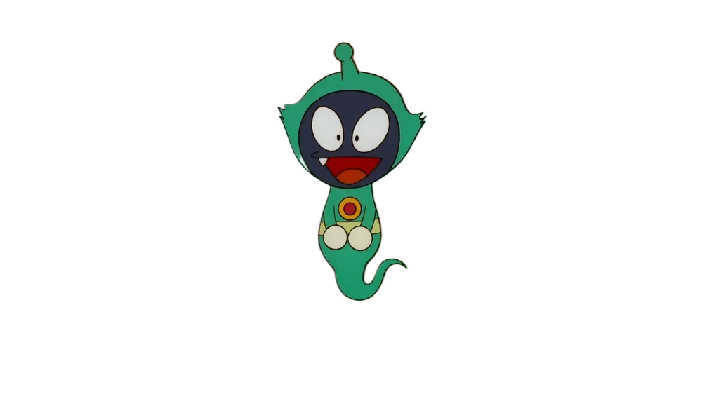

FLAME INFREEFALL
AI-powered fire safety insights from microgravity combustion data. On Earth, hot gas rises and pulls fresh oxygen into a flame. Remove gravity, and that convection disappears — flames turn spherical, burn cooler, and can smoulder invisibly. Understanding this is essential before humans live on the Moon or Mars.

Hi, I'm MikoJin 👋
I'll pop up in the corner as you explore this mission console with quick tips on where to go and what each section means. Click my avatar any time for the next tip, or the ✕ to tuck me away.
Why fire behaves like a different substance off-world
Four ideas explain almost everything that follows in this dashboard. Tap a card to expand it.
Search the NASA & JAXA microgravity combustion record
Eight flagship investigations, mostly flown aboard the International Space Station, form the backbone of what we know about fire in space.
Earth flame vs. microgravity flame
Buoyancy-driven convection is the difference-maker. Remove it, and every downstream property changes.
Earth — 1g
Microgravity — ~0g
Comparative risk across common scenarios
Composite scores from the same rule-based engine, ranked from most to least concerning. Illustrative / prototype data.
Key takeaways from two decades of orbital combustion science
Click a card to jump to the experiment that produced the finding.
The numbers behind the narrative
Hand-drawn on HTML Canvas / SVG from illustrative prototype values — filter the experiment explorer above and these stay in sync with fuel selection.
Flame Temperature Comparison
Burning Rate Comparison
Oxygen Concentration vs. Flame Behavior
Risk-Factor Radar
Experiment Comparison
Timeline of NASA / JAXA Combustion Research
Two very different habitats, two different fire problems
Adjust conditions on either card and the same AI engine re-estimates risk for that world.
Lunar Surface Habitat
A sealed, pressurized habitat in a vacuum environment with regolith dust and extreme thermal swings.
- Gravity: 0.16g — partial buoyancy, distorted flame plumes
- Atmosphere: sealed habitat, no external oxygen source
- Hazard: abrasive dust can coat detectors and clog filters
Martian Surface Habitat
Higher gravity than the Moon but still far below Earth's, with a thin CO₂ atmosphere outside the hab.
- Gravity: 0.38g — partial buoyancy restores some convection
- Atmosphere: 95% CO₂ outside; artificial mix inside habitat
- Hazard: dust storms can affect external systems and airlocks
How the research connects
Click any node to trace its connections across experiments, effects, hazards, and destinations.